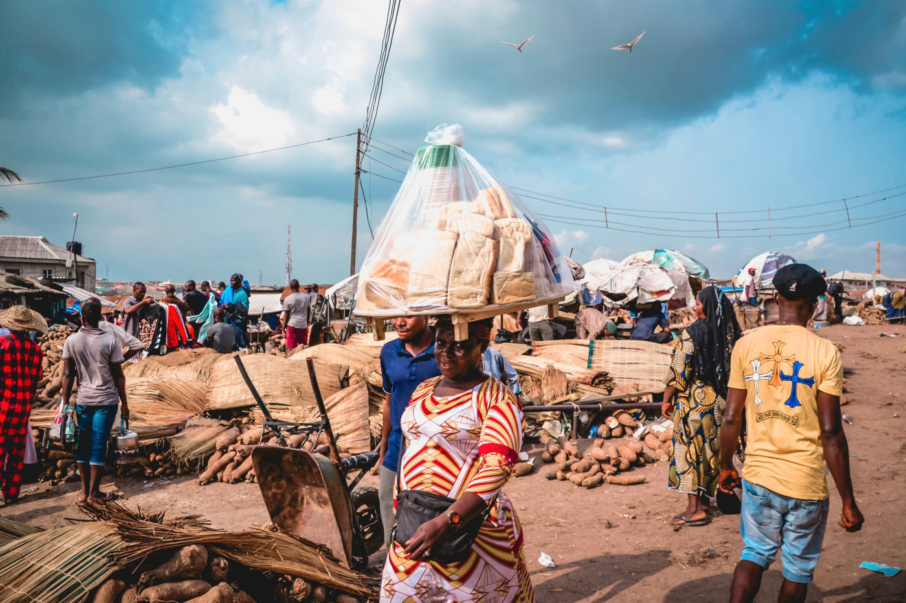

What's Really Going On
Walk through Igbo-Ora, a market town a couple of hours from Lagos, on an ordinary Tuesday, and it starts to feel like your eyes are playing tricks on you. Two identical girls in matching school uniforms cross the road together. A market stall is run by two nearly indistinguishable women who finish each other's sentences with customers. It isn't a festival, and nobody is staging anything for visitors — this is simply what an average week looks like in a town where an unusually large share of every family includes a matching pair.
Igbo-Ora has earned an unofficial title: the "Twin Capital of the World." Reliable surveys of the town and the wider Yoruba region of southwestern Nigeria have recorded twin births at roughly four to five times the global average of about 12 per 1,000 births — a gap large enough that researchers have studied the area for decades trying to explain it. The leading theory points to diet, specifically the region's heavy consumption of a local yam variety that some scientists suspect contains a natural compound capable of triggering hyperovulation, though the science remains unsettled and no cause has been definitively confirmed.
What isn't in dispute is how central twins are to Yoruba identity. Every set of twins, regardless of sex, receives the same two names based purely on birth order: the first-born is called Taiwo, and the second is called Kehinde. Roughly translated, Taiwo means something like "the one who goes to taste the world," and Kehinde means "the one who arrives after."
To the Yoruba, the twin born second isn't the younger one — it's the one who sent the other out first.
Where This Comes From
On the surface, that looks like a simple birth-order label — first one out, first one named. But Yoruba tradition inverts the hierarchy those names seem to suggest. Kehinde, despite being born second, is traditionally treated as the senior of the two souls. According to the belief, it was Kehinde who sent Taiwo out first, to test whether the world beyond the womb was safe to enter — meaning the "younger" twin was actually following the older one's instructions the entire time. In everyday life, this isn't just folklore trivia: Kehinde is expected to receive certain marks of deference from Taiwo that would normally go to an older sibling.
That inversion sits inside a much larger belief system. In traditional Yoruba cosmology, twins are considered spiritually extraordinary — capable of channeling unusual blessing and prosperity to a family that honors them properly, and, conversely, misfortune to one that doesn't. That belief historically created strong social pressure to celebrate twins visibly: matching clothing, public pride, and ritual care that, in earlier generations, extended even past death.
Beyond the Basics
Before modern medicine sharply reduced infant mortality, it wasn't unusual for one twin in a pair to die in infancy. When that happened, Yoruba families historically commissioned a small carved wooden figure known as an ère ìbejì — literally, "twin image" — to represent the spirit of the child who had died. The surviving mother would care for the figure exactly as she would a living infant: washing it, dressing it in tiny clothes, and even offering it food at mealtimes, believing that this ongoing ritual attention helped protect the life of the surviving twin. Museums today, including the Metropolitan Museum of Art and the Art Institute of Chicago, hold ère ìbejì figures as significant pieces of West African sculpture.
What makes this especially striking is how differently another part of the same country once treated the exact same biological event. Among the Efik people of Calabar, in Nigeria's Cross River region, 19th-century tradition held the opposite belief: that twins were an evil omen, the result of one infant being fathered by a malevolent spirit that no one could identify. For generations, both babies were not permitted to survive infancy. It took nearly four decades of campaigning by Scottish missionary Mary Slessor, who arrived in Calabar in 1876 and worked to rescue and rehome twin infants herself, before the practice was fully abandoned in the early 1900s — a belief overturned within the same national borders where, a few hundred kilometers away, twins were simultaneously being welcomed as a sign of divine favor.
Today, Igbo-Ora leans fully into the identity its birth rate gave it, hosting an annual twins festival that draws visiting pairs from across the region and beyond, with matching outfits treated less as obligation than as a point of local pride. The ère ìbejì tradition has become rarer as child mortality has fallen, but the underlying reverence for twins — and the specific, inverted logic of who outranks whom — hasn't gone anywhere.

What to Know If You Visit
A few pointers if your travels take you through Yoruba country:
- If you meet a set of twins, asking their names is a great icebreaker — nearly every Yoruba pair is named Taiwo and Kehinde, and locals enjoy explaining which is which.
- Igbo-Ora holds an annual twins festival, usually in October — check current dates if you'd like to attend; matching outfits and photography are welcomed at the public event.
- Genuine warmth toward twins and their families is well received — the belief that twins bring blessing runs deep, and outsiders showing interest is generally seen as a compliment, not an intrusion.
- If you're giving a small gift to a family with twins, offer it to both, not just one — treating the pair equally matters.
- Should you encounter an ère ìbejì figure in someone's home, treat it as you would any spiritual object — admire it, but don't touch it without being invited to.
- Attitudes toward twins vary significantly across Nigeria's many ethnic groups — let the people you're with guide the conversation rather than assuming one region's beliefs apply everywhere.
The Bigger Picture
It's a reminder of how little biology alone explains. A shared womb is a shared womb everywhere on Earth; what a culture decides that coincidence means — a blessing worth naming and ranking with precision, or, in a different community a few hundred kilometers away, a danger to be feared — is never written into the biology itself. It's written afterward, by the people who have to make sense of it.
Curious how nearby cultures handle similar rules? Don't miss our pieces on The Cow That Walks Wherever It Wants, and No One Dares Stop It and The Coffins That Look Like Everything But a Coffin.